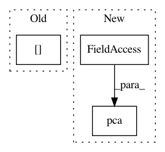

315859c5586116434ea3b7ce97512a5e2a1030e2,scanpy/exs/builtin.py,,paul15pca,#,245
Before Change
ddata = paul15_raw()
ddata["X"] = sc.pp(ddata["X"], "log")
// reduce to 50 components
ddata["Xpca"] = sc.pca(ddata["X"])
// adjust expression vector of root cell
ddata["xroot"] = ddata["Xpca"][ddata["iroot"]]
return ddata
After Change
adata = paul15_raw()
adata.X = sc.pp(adata.X, "log")
// reduce to 50 components
apca = AnnData(sc.pca(adata.X), adata.smp, vis=adata.vis, iroot=adata["iroot"])
// adjust expression vector of root cell
apca.var["xroot"] = apca.X[apca["iroot"]]
return apca
In pattern: SUPERPATTERN
Frequency: 3
Non-data size: 3
Instances
Project Name: theislab/scanpy
Commit Name: 315859c5586116434ea3b7ce97512a5e2a1030e2
Time: 2017-02-06
Author: flying-sheep@web.de
File Name: scanpy/exs/builtin.py
Class Name:
Method Name: paul15pca
Project Name: theislab/scanpy
Commit Name: 94ec55bd5c13d75a590f82d41ff66e422bc11b1d
Time: 2017-02-20
Author: f.alex.wolf@gmx.de
File Name: scanpy/tools/tsne.py
Class Name:
Method Name: tsne
Project Name: DistrictDataLabs/yellowbrick
Commit Name: 4d0483edd1468855df714f77bca1a0a93f01cbce
Time: 2018-06-18
Author: benjamin@bengfort.com
File Name: docs/api/features/pca.py
Class Name:
Method Name: